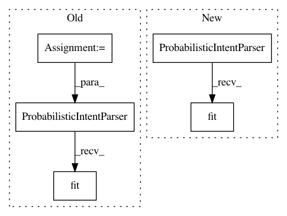

aa7a5124211456bf14340a7f0ea06e64af83c882,snips_nlu/tests/test_probabilistic_intent_parser.py,TestProbabilisticIntentParser,test_should_be_serializable_into_bytearray,#TestProbabilisticIntentParser#,569
Before Change
- make me [number_of_cups:snips/number](one) cup of coffee please
- brew [number_of_cups] cups of coffee)
dataset = Dataset.from_yaml_files("en", [dataset_stream]).json
shared = self.get_shared_data(dataset)
intent_parser = ProbabilisticIntentParser(**shared)
intent_parser.fit(dataset)
// When
intent_parser_bytes = intent_parser.to_byte_array()
loaded_intent_parser = ProbabilisticIntentParser.from_byte_array(
After Change
intent_classifier_config="my_intent_classifier",
slot_filler_config="my_slot_filler"
)
parser = ProbabilisticIntentParser(parser_config).fit(dataset)
// When
intent_parser_bytes = parser.to_byte_array()
loaded_intent_parser = ProbabilisticIntentParser.from_byte_array(
In pattern: SUPERPATTERN
Frequency: 3
Non-data size: 5
Instances
Project Name: snipsco/snips-nlu
Commit Name: aa7a5124211456bf14340a7f0ea06e64af83c882
Time: 2019-01-17
Author: adrien.ball@snips.ai
File Name: snips_nlu/tests/test_probabilistic_intent_parser.py
Class Name: TestProbabilisticIntentParser
Method Name: test_should_be_serializable_into_bytearray
Project Name: snipsco/snips-nlu
Commit Name: ee0dab4ec731092cb6a976c86320c7c681b42718
Time: 2019-01-17
Author: adrien.ball@snips.ai
File Name: snips_nlu/tests/test_probabilistic_intent_parser.py
Class Name: TestProbabilisticIntentParser
Method Name: test_should_be_serializable_into_bytearray
Project Name: snipsco/snips-nlu
Commit Name: aa7a5124211456bf14340a7f0ea06e64af83c882
Time: 2019-01-17
Author: adrien.ball@snips.ai
File Name: snips_nlu/tests/test_probabilistic_intent_parser.py
Class Name: TestProbabilisticIntentParser
Method Name: test_should_get_intents